Plan
Every city lines up.
Name a meeting, an alarm or a goal and pick a time. TimePeace shows what that time is in your other cities.
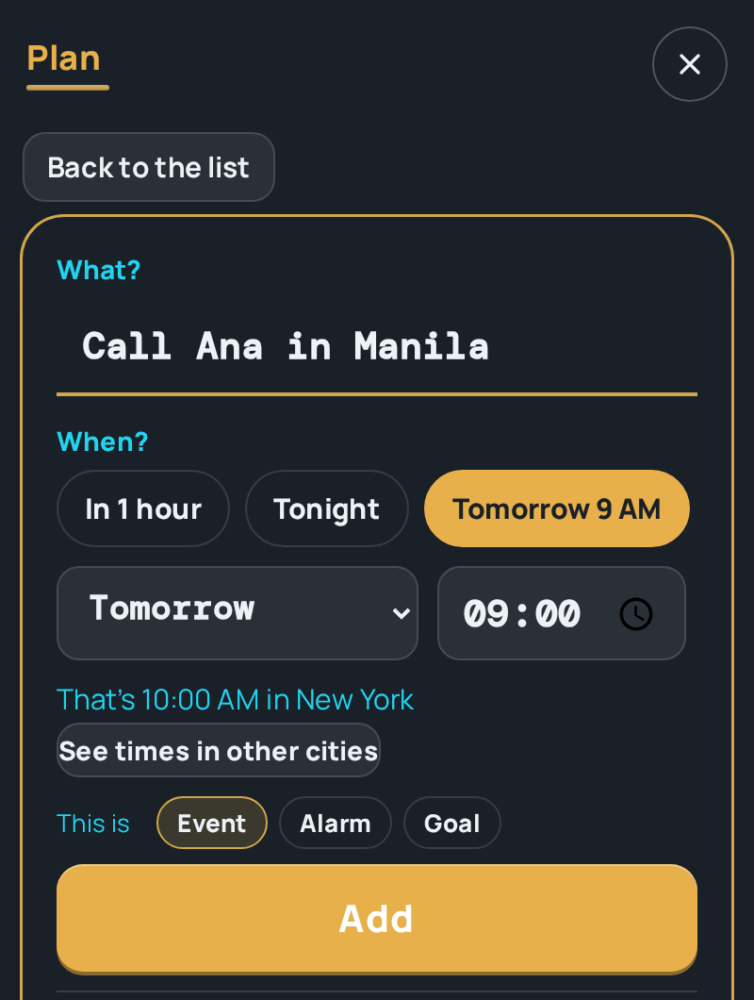
Every city you care about, on one watch face that sits on your desktop.
Also for Mac (Apple silicon), Mac (Intel) and Linux
Plan
Name a meeting, an alarm or a goal and pick a time. TimePeace shows what that time is in your other cities.

Alarms
An alarm pops up on the watch, in front of everything, until you press Dismiss or Snooze.
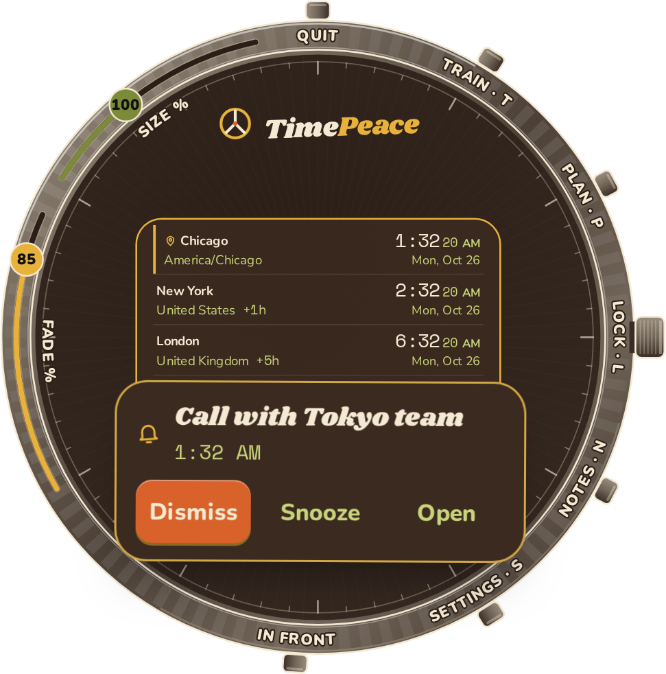
Sticky notes
Paper notes on your desktop, each with a curled corner and a pin. Pick a color or a paper, then pin it so it stays where you left it.
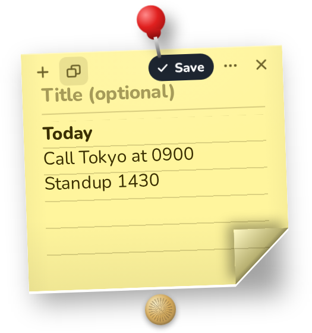
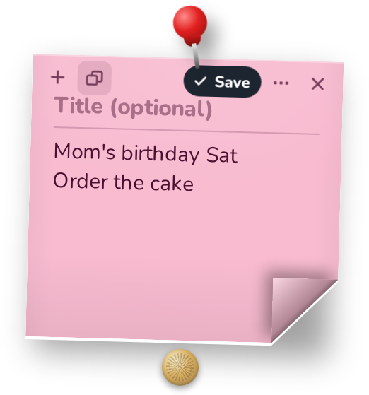
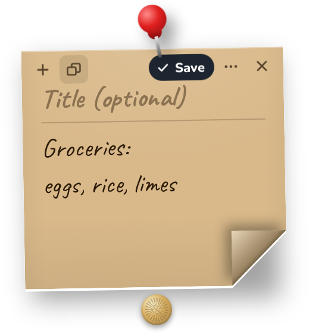
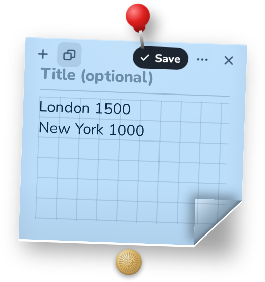
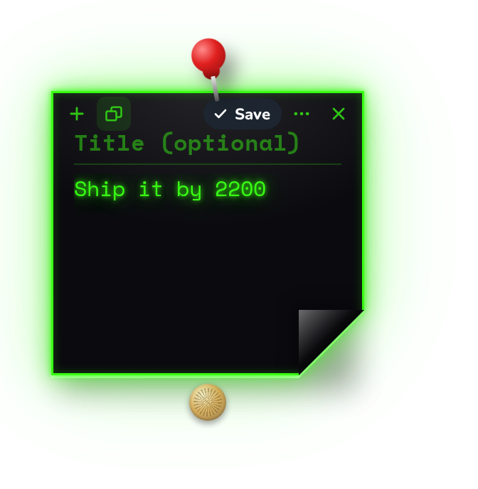
Settings
A side rail lists Look, Clocks, Notes, Desktop, Shortcuts, Voice typing and About. Pick one, or search for what you want and go straight to it.
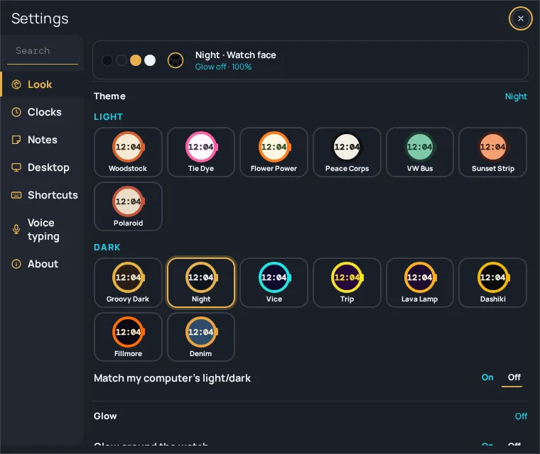
Little scenes that move behind your clocks. Your cities sit right in them.
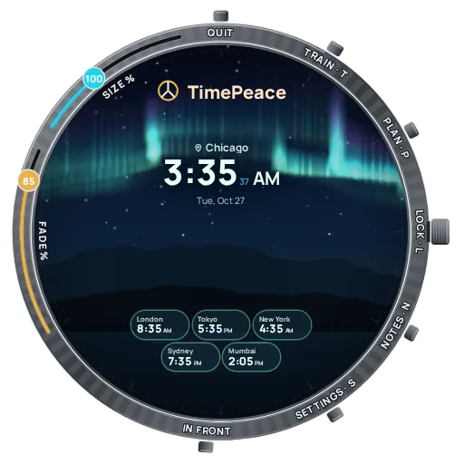
NORTHERN LIGHTS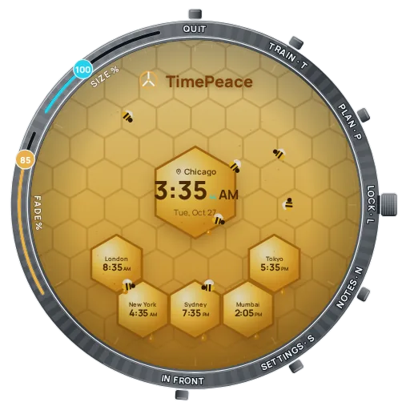
BEES & HONEYCOMB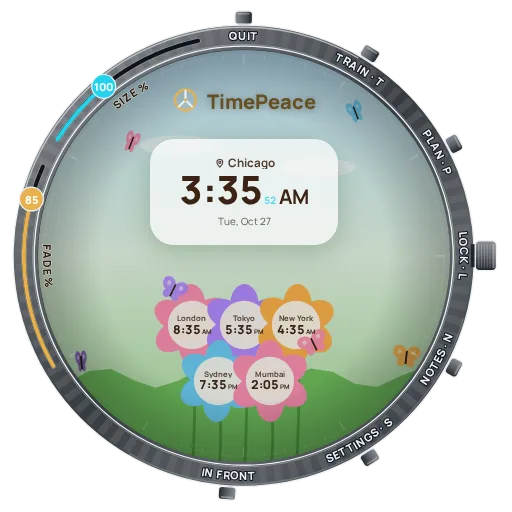
BUTTERFLY GARDEN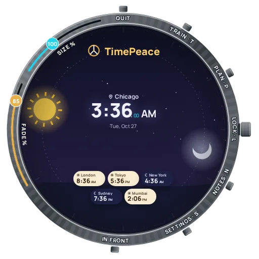
SUN & MOON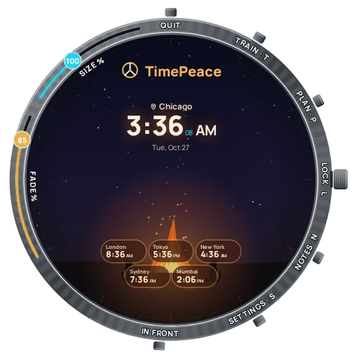
CAMPFIRE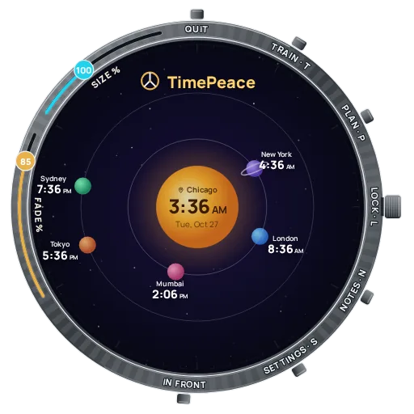
PLANET ORBITNot a fan of motion? The Animate layout switch in Settings freezes any scene into a still picture.
One file, TimePeace.exe.
If Windows shows a blue SmartScreen box, choose More info, then Run anyway.
Add your cities, pick a look, and drag the clock where you want it.
Also for Mac (Apple silicon), Mac (Intel) and Linux